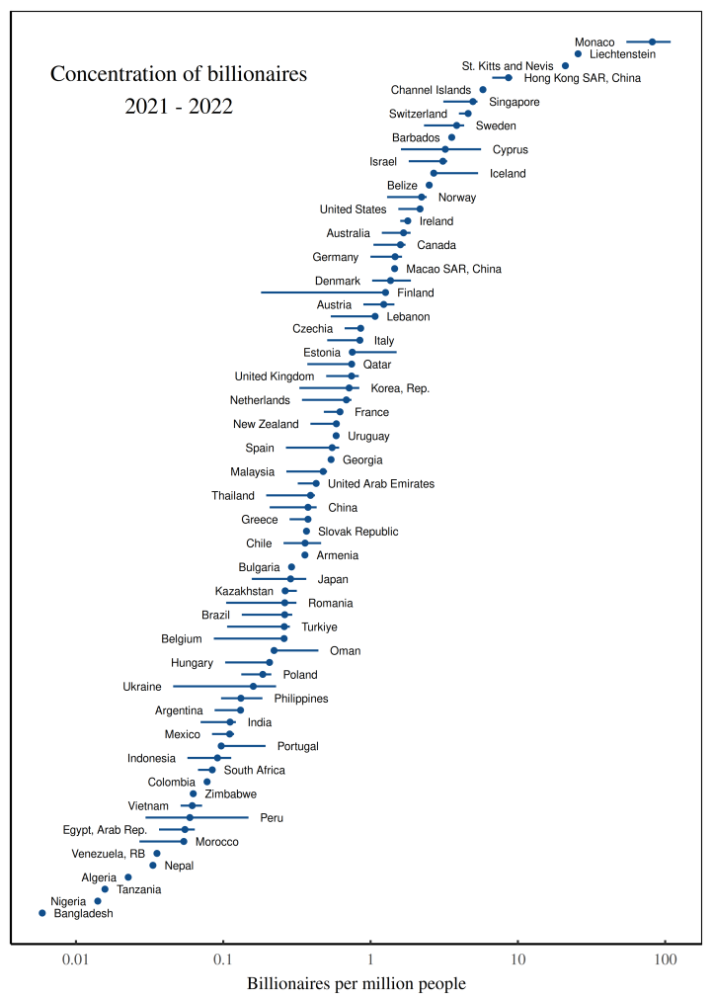
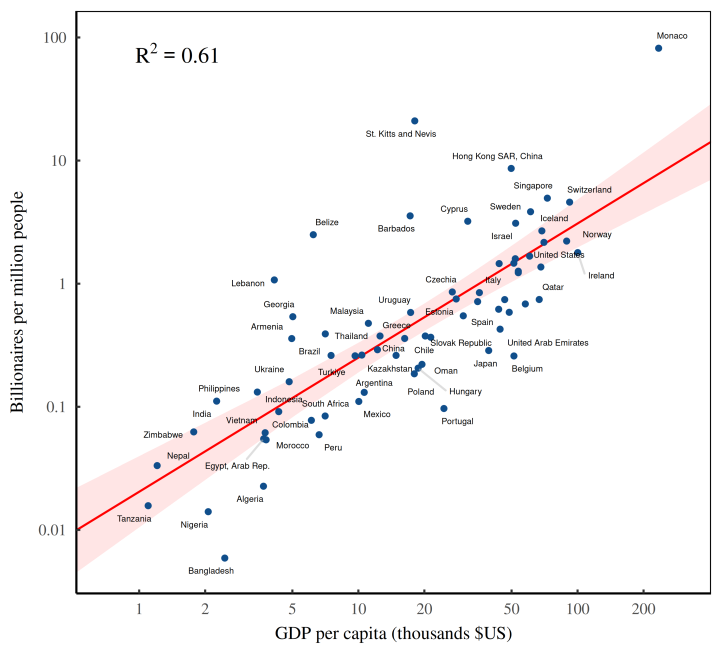
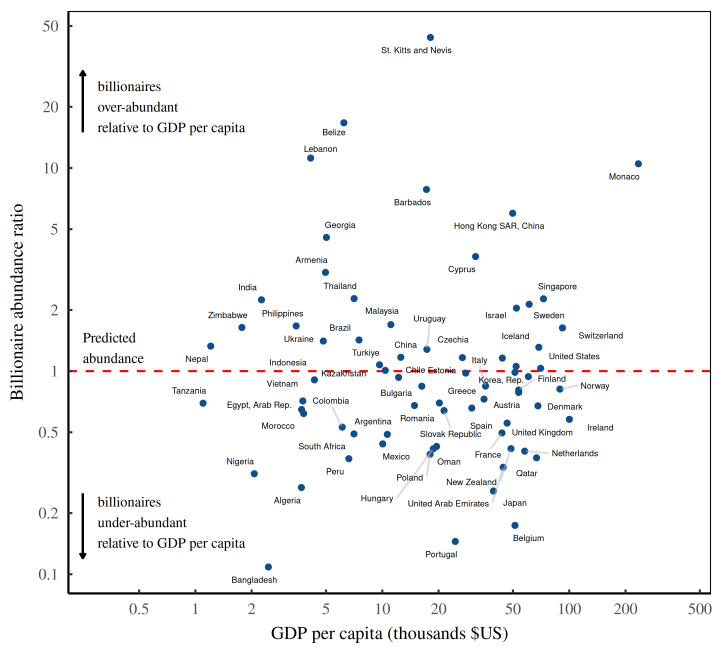

40 Externalities
40.1 Commons
Resource extraction and pollution of the commons power the beating heart of global economic prosperity.
40.1.1 Hardin and Ostrom
Nijhuis
The features of successful systems, Ostrom and her colleagues found, include clear boundaries (the ‘community’ doing the managing must be well-defined); reliable monitoring of the shared resource; a reasonable balance of costs and benefits for participants; a predictable process for the fast and fair resolution of conflicts; an escalating series of punishments for cheaters; and good relationships between the community and other layers of authority, from household heads to international institutions.
Like Hardin, many conservationists assume that humans can only be destructive, not constructive, and that meaningful conservation can be achieved only through total privatisation or total government control.
In southern Africa in the 1980s, some conservationists recognised that parks and reserves, many created by colonial governments, had divided subsistence hunters and farmers from much of the wildlife that had long sustained them – and which, in some cases, they’d managed as a commons for generations. The resulting lack of local support meant that even the best-patrolled park boundaries were vulnerable to incursions by human neighbours, people unlikely to tolerate – much less protect – the large, sometimes troublesome species that ranged beyond even the largest reserves.
In 1987, when the South African conservationist Garth Owen-Smith attended a conference on community-based conservation in Zimbabwe, a comment by Harry Chabwela, the director of Zambia’s national parks, left a lasting impression. ‘At this conference we have talked a lot about giving local people this and giving them that, but what has been forgotten is that they also want power,’ Chabwela said. ‘They want a say over the resources that affect their lives. That is more important than money.’
In 1996, the Namibian National Assembly passed a law that allowed groups of people living on communal land to establish institutions called conservancies. Conservancies would be governed by elected committees, and all members would share the benefits of any tourism or commercial hunting within conservancy boundaries.
40.2 History of Economics’ ‘Externalities’
Duncan Austin
Incomplete Markets
Externalities were generally ignored through most of the 20 Century. After Pigou had identified the problem in the 1920s, there followed a long barren period for “welfare economics”, the natural home for this type of thinking. This lasted until the early 1970s when there were the first stirrings of renewed interest by serious economists.
Framed as “externalities”, market failures could be more easily dismissed. The term encourages a perception of unpriced damages as being mere residuals to the centrepiece of a priced economy. Since Pigou, some have sought to “beef up” the terminology. K. William Kapp, for example, bluntly described the market mechanism, in toto, as a “cost-shifting” institution. In this framing, externalities are not a bug, but a feature.
The mathematization of economics – another marker of the discipline’s scientific aspiration – exacerbated the situation. The desire for manageable equations and functioning models further pushed troublesome market imperfections away. Possibly, there was the sense that positive and negative externalities might roughly cancel each other out, leaving GDP incomplete but still reliable enough as a directional indicator. That rests on the assumption that positive and negative externalities are symmetrical in nature.
However, there is an important asymmetry. Positive externalities take the form of “free goodies”, whereas certain negative externalities constitute systemic risks that may be catastrophic to “trip” or breach. While you generally cannot have too much of a positive externality – a “free good thing” – too much of certain unwanted harms may induce systemic failure.
Externalities exist because markets have an incomplete grasp of what humans value. Markets work off prices and not everything has – or can have – a price. As such, marketed values – or prices – exist amidst a broader “value field” of things that humans care about and which have an influence on our wellbeing.
Pigou’s proposition was an inconvenient truth for economics. It suggested that there are real limits to what conventional economics might say about matters of human value and, hence, to how far markets might serve human wellbeing. The inconvenience of his idea may be why Pigou is not better known – seemingly more tolerated, than celebrated
Complete markets…?
As a discipline, economics did the very human thing of trying to ignore a difficult proposition. By not confronting Pigou’s awkward challenge, the door was opened for a line of theorizing th that led in exactly the opposite direction. Economists for most of the 20 Century sought to establish economics as a comprehensive corpus of thought with universal application.
Hence, by the 1950s, a very appealing theory of complete markets had been developed. No externalities in this theory, none at all.
Complete market theory is the laying down of a conceptual blanket over all our preferences that leaves no space for externalities.
The formulation of complete markets theory was deemed a major milestone for economics. Its authors were Kenneth Arrow and Gérard Debreu. It provided the cornerstone for the discipline’s claim for the superiority of markets as a mechanism for social coordination.
Rather, the key mistake made by 20 Century economics was not in misunderstanding externalities, but in grossly underestimating their magnitude and so foreclosing a debateon the innate limits of economic thinking. The discipline considered that markets were “complete enough” to safely proceed as if they were actually complete! We are now waking up to the consequences of that misjudgement.
… Or very incomplete markets?
Consider, for example, a recent study by Robert Costanza and colleagues. They estimated the monetary value of the “services” provided free by the Earth’s ecosystem at $125 trillion in 2 2011, nearly twice the value of global GDP (gross domestic product) at the time. The authors believe this to be a conservative estimate because it grasps only about half of the “services” we know ecosystems provide.
Other studies have contemplated the value of unmonetized social systems, including one estimate that unpaid housework in the UK in 2016 was about 65 percent of GDP – another 3 huge block of value not captured by the market. Just combining this figure with the Costanza et al. figure suggests that measured GDP captures about a third of some larger conception of value.
From its very inception, GDP has been derided as an incomplete measure of wellbeing. However, in elevating GDP to its current perch of influence, the working assumption has been that GDP, and the market system it reflects, captures the lion’s share of what matters. What the latest estimates of “externalities” and non-market values suggest – and what our sustainability crisis seems to underscore – is that our perception of GDP’s reach may be horribly off. Such an estimate suggests that it is not that the market does not capture all things of value, it does not even capture most things of value. Far from externalities being peripheral, they may be the main event!
The failure of economics to fully incorporate externalities in its 20th-century theorizing now appears to be the dropped stitch that defines the whole discipline. For a long time, this was a tolerable neglect as markets were more robustly counterbalanced by pre- market institutions that upheld unpriced values, and as the environment was able to absorb the fewer demands of a smaller, less consumptive population. But, with the onset of climate and biodiversity emergencies, the context has changed considerably. It matters more and more that we might not have slightly incomplete markets, but very incomplete markets.
It has left us at the start of the 21 Century transforming the matter and energy of the world using economic and financial tools that have only a very limited grasp of the reality they fashion.
In a world of very incomplete markets, things of human value lie in two separate realms – the marketed domain and the non-marketed domain. Some of the growth of the marketed economy genuinely arises from human ingenuity and creativity unlocking better ideas and products from new combinations of inputs. This is “good” growth, which ought to be celebrated and encouraged. However, other parts of monetized “growth” arise from simply running down the stocks of what is valuable but in the non-marketed realm. This is the illusion of wealth creation based on registering the increase in marketed value, but not recording the decrease in unmarketed values. In contrast to growth from genuine ingenuity, this is robbing Peter to pay Paul.
Measured economic “growth” overall combines in unknown proportions a “creative growth”, which we want to encourage, and a “parasitic growth”, which we do not. At an aggregate level, it is almost impossible to trace the origins – creative or parasitic – of GDP growth, and very few official metrics make any attempt to do so.
Our working assumption is that all economic growth is good – as it indeed would be if we had complete markets eliminating the possibility of parasitic growth. However, in not knowing the real-world mix between creative and parasitic growth, do we want more GDP growth, or less? It is not clear. And, given that companies work to the same price register as GDP, do we want companies to beat profit expectations or would it be better if they missed them? Who really knows? The conventional argument – captured by the notion of an Environmental Kuznets Curve – is that it is only by increasing monetary wealth that we can develop better technology to protect the environment. However, it is not clear in the aggregate whether the deployment of such new capabilities ever makes good the damage done by the initial enabling wealth creation. While anecdotes can be summoned to support the idea – electric cars, wind turbines, LEDs etc – thus far, at the global level that matters, data shows we remain in net ecological destruction mode.
Markets within Cultures
Paradoxically, then, to use markets more than we are, to introduce more externality pricing, would require a new cultural level reassertion that markets are a tool within culture. We need not a sustainable economy, but a sustainable culture that has an economy. Such a culture would establish room for governments to introduce new markets which powerful market ncumbents may not like, but which improve human wellbeing. In turn, such a culture would also invigorate non-market means to protect our environment, for we must remember that not everything of human value can be priced and “internalized”. The interesting question, worth a moment’s reflection, is: why is that?
Commodifiable Externalities
Though Pigou identified commodifiable externalities, there are many things of human value that cannot withstand the disembedding from their context necessary for them to be commodified and, hence, be transactable via market exchange. Such values are non- transactable because they are irrevocably embedded either in specific things – they are unique – or in specific relations – they exist “between” certain things. Some examples: friendship, reputation, loyalty, integrity, trust, community, mental health, etc. If you believe you have purchased any of these items, you might want to check the label.
What is tricky is that most things in the world bear both separable transactable values and intrinsic non-transactable values. A tree has both separable value as a feedstock for furniture and paper and intrinsic value as part of the ecosystem in which it is relationally embedded.
We tend to value trees in managed plantations for their separable values, but we value General Sherman, the 26-story-tall giant sequoia that is the largest known tree on Earth, for its non-separable attribute of being uniquely the tree we call General Sherman. With General Sherman, we have chosen to perceive and value its uniqueness over its instrumental value. Indeed, we might say that General Sherman is price-less. The “economist” denies the validity of this perspective by arguing that everything has a price. To say that something is priceless is merely to say that nobody has yet offered a high enough price. In turn, the “ecologist” denies the “economist’s” perspective, arguing that while you can apply such economic thinking to General Sherman, it is the wrong sort of thinking to apply.
Both the “economic” transactional perspective and the “ecological” intrinsic perspective are beneficial and valid, but they are incompatible.
The decision to apply an economic perspective to the external world is always a value judgment that necessarily transcends economics. More, it is a value judgment that can never be justified or refuted on economic grounds precisely because it is an argument about the validity of applying an economic perspective.
All this is a discussion that the field of economics may well have taken more seriously 100 years ago, had it been more open to the significance and implications of Pigou’s formulation of externalities. Alas, we are now having to unknit to pick up this dropped stitch in a world now confronting large-scale problems of missed externalities.
Incompletness Theorem of Economics
Economics might be well served by formalizing an incompleteness theorem that would act as a proverbial knot-in-a-handkerchief reminder about the limits of claims that economics can make. It is an oddity of human intellectual thought that the most logical of our sciences, mathematics, had a formal Incompleteness Theorem as early as 1930, while economics formalized a complete market theory in the 1950s and seemingly still has no definitive statement of incompleteness.
Ringfecing Economics
One of the ways, then, that we could better protect ecological values is for economics to recognize – re-cognize – the wisdom of culturally ring-fencing where economic thinking is preferred. In other words, to recognize the non-monetizable value of non-economic thinking.
Designating areas as protected are to explicitly restrain the ever-eager economic perspective. Such boundaries need to be upheld at the social or cultural level to count for anything. If not individuals can always free ride and extract the monetary instrumental value that others have agreed not to pursue.
While economics is undoubtedly a valuable form of knowledge, it is a way of seeing things, not the way.
A full century after Pigou formalized the idea of externalities, we might mark the anniversary by taking more seriously the effort to clarify the appropriate reach of economics and markets within the broader social and cultural context.
Economics is about solved Political Problems
Arguably, one of the most important questions in economics is not even an economic question. The field effectively punts the matter of its own ontology – the things that economics can talk about – to a different discipline. In Abba Lerner’s words:
“An economic transaction is a solved political problem. Economics has gained the title of Queen of the Social Sciences by choosing solved political problems as its domain.”
Economics has been strangely content to focus its efforts on pattern-seeking within a domain it leaves other disciplines to define, but in the absence of contemplating its boundaries more explicitly, it has hubristically come to believe it has greater reach than it really has.
In turn, this leaves most economists – and the great many people who think and act economically in conducting their professional duties – dangerously unaware of where economic thinking is beneficial and valid and where it ultimately hits limits.
Duncan Austin: Pigou and the dropped stitch of economics RWER95 (pdf)
40.3 Ecosystem Services
Constanza
• Global loss of ecosystem services due to land use change is $US 4.3–20.2 trillion/yr. • Ecoservices contribute more than twice as much to human well-being as global GDP. • Estimates in monetary units are useful to show the relative magnitude of ecoservices. • Valuation of ecosystem services is not the same as commodification or privatization. • Ecosystem services are best considered public goods requiring new institutions.
In 1997, the global value of ecosystem services was estimated to average $33 trillion/yr in 1995 $US ($46 trillion/yr in 2007 $US). In this paper, we provide an updated estimate based on updated unit ecosystem service values and land use change estimates between 1997 and 2011. We also address some of the critiques of the 1997 paper. Using the same methods as in the 1997 paper but with updated data, the estimate for the total global ecosystem services in 2011 is $125 trillion/yr (assuming updated unit values and changes to biome areas) and $145 trillion/yr (assuming only unit values changed), both in 2007 $US. From this we estimated the loss of eco-services from 1997 to 2011 due to land use change at $4.3–20.2 trillion/yr, depending on which unit values are used. Global estimates expressed in monetary accounting units, such as this, are useful to highlight the magnitude of eco-services, but have no specific decision-making context. However, the underlying data and models can be applied at multiple scales to assess changes resulting from various scenarios and policies. We emphasize that valuation of eco-services (in whatever units) is not the same as commodification or privatization. Many eco-services are best considered public goods or common pool resources, so conventional markets are often not the best institutional frameworks to manage them. However, these services must be (and are being) valued, and we need new, common asset institutions to better take these values into account.
Constanza (2014) Global value of ecosystem services (Paywall) (pdf)
Constanza (2019) Natural Capital and ERcosystem Services
“The fossil fuel industry has been granted the greatest market subsidy ever: the privilege to dump its waste products into the atmosphere at no charge.” (Michael Mann)
40.4 Environmental Degradation
40.4.1 Kuznets and Engel Curves
Environmental Kuznets and Engel’s Curve
I think degrowth is wrong on the merits (environmental kuznets curves and environmental engel curves are both concave), but it’s also an obvious nonstarter even if it was founded on solid footing, To spell this out: if EKC and EECs are concave, redistribution within or between countries doesn’t necessarily reduce environmental damages. (John Voorheis (twitter))
Abstract Maneejuk:
This study aims to examine the relationship between economic development and environmental degradation based on the Environmental Kuznets Curve (EKC) hypothesis. The level of CO 2 emissions is used as the indicator of environmental damage to determine whether or not greater economic growth can lower environmental degradation under the EKC hypothesis. The investigation was performed on eight major international economic communities covering 44 countries across the world. The relationship between economic growth and environmental condition was estimated using the kink regression model, which identifies the turning point of the change in the relationship. The findings indicate that the EKC hypothesis is valid in only three out of the eight international economic communities, namely the European Union (EU), Organization for Economic Co-operation and Development (OECD), and Group of Seven (G7). In addition, interesting results were obtained from the inclusion of four other control variables into the estimation model for groups of countries to explain the impact on environmental quality. Financial development (FIN), the industrial sector (IND), and urbanization (URB) were found to lead to increasing CO 2 emissions, while renewable energies (RNE) appeared to reduce the environmental degradation. In addition, when we further investigated the existence of the EKC hypothesis in an individual country, the results showed that the EKC hypothesis is valid in only 9 out of the 44 individual countries.
Maneejuk (2020) Does the Environmental Kuznets Curve Exist? (pdf)
The Kuznets curve expresses a hypothesis advanced by economist Simon Kuznets in the 1950s and 1960s. As an economy develops, market forces first increase and then decrease economic inequality.
Since 1991 the environmental Kuznets curve (EKC) has become a standard feature in the technical literature of environmental policy, though its application there has been strongly contested.
The environmental Kuznets curve (EKC) is a hypothesized relationship between environmental quality and GDP growth: according to its argument, which is spurious, various indicators of environmental degradation tend to get worse as modern economic growth occurs until average income reaches a certain point over the course of development, at which point some studies have argued, they improve.
It first became popular as introduced by Gene Grossman and Paul Krueger in their working paper: “Environmental Impacts of a North American Free Trade Agreement.” This paper simply showed that the non-direct Greenhouse gas, Sodium Dioxide, Dark Matter, and Suspended particles followed an inverted-U shaped pattern. This was almost immediately misinterpreted by the World Bank and Beckerman and adopted into policy as an argument that all negative environmental effects would follow an EKC pattern. Copious research has concluded that beyond these pollutants, and issues like water quality, that immediately threaten human health, GDP growth essentially harms, and does not help the environment with no lasting “turning point.” The EKC has led to poor policy choices reaping untold environmental damage.
40.5 Energy and Transport
The “hidden cost” of our largely fossil fuel-based energy and transport systems could add up to around $25 trillion (£18 trillion) – the equivalent of more than a quarter of the world’s entire economic output.
That’s according to new research, which estimates the hidden environmental, social and health costs associated with different forms of transport and electricity generation.
Sovacol (2021) (pdf)[(pdf/Sovacol_2021_Energy_and_Transport_Externalities.pdf)
40.6 Billionaire Concentration
Fix
The billionaire headcount is determined in large part by a single quantity: a country’s average income - More money, more billionaires. Compared to poor countries, rich countries ought to have more billionaires.

Fig: The concentration of Forbes billionaires across countries. This figure uses Forbes data to measure the concentration of billionaires among the world’s countries, circa 2021-2022. Each point indicates the average concentration of billionaires within the corresponding country. (Note that the horizontal axis uses a logarithmic scale.) To construct the billionaire concentration, I divide billionaire counts (measured daily in 2021/2022) by population (measured in 2021). Horizontal lines indicate the 95% range of variation in the billionaire concentration over the observed time interval. (Countries without error bars have only one billionaire observation.)

Fig: As countries get richer, they accumulate billionaires. The horizontal axis shows countries’ average income in 2021, measured using GDP per capita. The vertical axis plots the number of Forbes billionaires per capita (measured in 2021–2022).
Technically, GDP per capita measures a country’s average income (a flow), while the Forbes list measures billionaires’ wealth (a stock). For the über rich, income and wealth are two sides of the same coin.
The capitalization ritual is based on two quantities that are undetermined. Future earnings are, by definition, unknown. And the choice of discount rate is a matter of taste. So we’re left where we started — with a capitalized value that is undefined.
Not to worry. Capitalists solve the problem with customs. They agree to judge future income by looking at recent quarterly earnings. And they choose a discount rate by looking at what everyone else is doing. As a result of this herd behavior, ‘income’ and ‘wealth’ become (statistically) interchangeable.
Billionaire headcount tends to increase with a country’s per capita income because income is what gets capitalized into wealth.
When statistical agencies measure GDP, they capture (among other things) the annual profits of all the companies that reside in the given country. Investors, in turn, take these profits and capitalize them into market value. Finally, Forbes looks at this market value to judge the net worth of the billionaires on its list. The result is a closed loop between aggregate income and billionaire wealth. So as average income grows, countries accumulate more billionaires.

Fig: The billionaire abundance ratio. The billionaire abundance ratio divides the actual billionaire density (based on Forbes data) by the expected billionaire density based on a country’s income per capita.
Now in capitalism, we no longer have feudal despots. But there’s still plenty of hierarchy. (In fact, there’s more hierarchy.) And guess who sits at the top of this hierarchy. That would be business despots … otherwise known as billionaires.
And if a society has a dearth of billionaires, you’d expect it to be more egalitarian. In short, the relative abundance of billionaires should be a canary for social inequality.
Power Law
Now in technical terms, a power-law exponent doesn’t capture ‘inequality’ so much as it quantifies the behavior of a distribution tail. At this point, I’m throwing around a lot of jargon, so let’s move down to earth by asking the following question: how many people have double your wealth?
If you’re a member of the elite, we can predict how many people have double your net worth using a single parameter which we’ll call \(alpha\). If α=3, then people with double your wealth are 2³=8 times rarer than you. And if α=2 then people with double your wealth are \(2^2 = 4\) times rarer than you. And so on. Given α, people with double your wealth are \(2^{\alpha}\) times rarer than you.
It’s an empirical fact that among the elite, the distribution of wealth tends to follow a power law. And the properties of this power law can be summarized using a parameter called α - the exponent in the following equation:
\[ p(x)∼\frac{1}{x^α}\]
Here, p(x) p(x) p(x) describes the probability of finding someone with net worth x. We call this relation a ‘power law’ because of its mathematical form — x raised to some power α.
What’s odd about power laws is that they use grade-school math to describe complex, real-world outcomes.
In the case of the US circa 2019, the power law has an exponent of α=2.3. So if you’re an American elite, someone with double your net worth is about \(2^2.3 ≈ 4.9\) times rarer than you.
What the power-law exponent does is capture the shape of the wealth-distribution tail. A higher exponent indicates a thinner tail. And a lower exponent indicates a fatter tail.